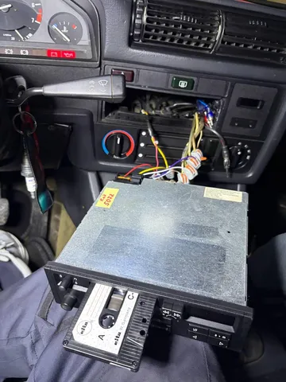
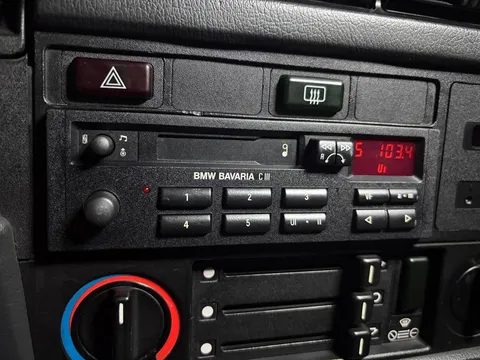

Что такое хороший подарок? Вот когда вам дарят то, что вам в упор не нужно, это грустно. Когда дарят то, что вы и так без проблем и колебаний себе купили бы - это скучно. А вот когда дарят то, что вы правда хотели, но что-то сами не решались, или руки не доходили - это восторг. Недавно у меня был день рождения, и коллеги провели некоторую разведку через праздные разговоры. В итоге они подарили мне как раз то, над чем я думал, но долго откладывал - оригинальный аутентичный магнитофон на E30. Спасибо им большое, очень круто! Прям в сердечко!
В изначальном плане проекта мафон был. Но в какой-то момент я уже смирился, что до этого, скорее всего, не доберемся. Однако, раз уж мафон у нас чудесным образом появился - надо ставить! Разумеется, plug&play не случился. В машине стояла какая-то условно современная магнитола ну вот как вы себе представляете типичную стороннюю магнитолу из 00-х или 10-х. Даже со съемной панелькой.
Первым шагом было решено попробовать включить эту магнитолу, чтобы хотя бы убедиться в работоспособности динамиков и целостности проводки. Для этого нужно было нацепить ту самую съемную панельку. Когда при покупке бэхи мы ехали домой, эта панелька отвалилась, и я за ненадобностью ее закинул в бардачок. Но бардачок плохо закрывался, и я его закрыл посильнее... Так вот, теперь выяснилось, что больше он не открывается. Ну и ладно. Будем надеяться, что все включилось бы.
Вытащить старую магнитолу оказалось совсем не сложно, она просто не была никак закреплена и держалась просто на силе трения с салазками. Далее открылась абсолютно ожидаемая картина - родная проводка варварски отрезана, а к ней на скрутки приделана типовая фишка под современные магнитолы - ничего другого я и не ожидал. Но для новой оригинальной магнитолы нужна соответствующая фишка под оригинал. Поиски заняли несколько дней, и все же увенчались успехом - спустя неделю фишка приехала.
Конструктивно она даже подошла, хоть и имеет какой-то лютый оверкилл - воткнуть/вытащить ее трудно из-за сложной кинематики скользящего фиксатора. А сделать это, разумеется, пришлось еще раза 3. Дальше нужно было срастить проводку от авто с проводами фишки. Для этого была найдена распиновка, приступили. Один контакт, правда, пришлось перепиновать, не все совпало.
В качестве промежуточного шага на период проверки и отладки нужно было как-то зафиксировать контакты, тут на помощь пришли обычные клеммники ваго, куда без них! И не зря не стали сразу капитально сращивать, потому что один из каналов усиления оказался слегка погоревшим, и пришлось перекинуть одну из передних колонок на задний канал. Все равно акустические провода в консоль приходили только от переда, и завести удалось только передние динамики.
Главное, что в итоге музыка играет - и в машине, и на душе. А играет она с кассеты, которую я записывал еще для прошлой машины с кассетным мафоном (Chrysler New-Yorker 1989). В репертуаре у нас теперь a-ha, moby, nickelback, pain, bon jovi, reamonn, r.e.m., the offspring и другие легенды 90-х и 00-х. It's my life - #лёха_строит_бэху

